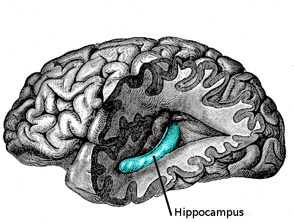

Neurogenesis is the division of new brain cells. In this case, we are specifically refering to the brain.
Some of the more interesting findings is that adult animals often have new brain cells (and an increase in size) of parts of the brain during seasons associated with a behavior. For example, birds that sing to attract mates have new brain cells in the hippocampus during this time period.
Studies in primates and rats suggest that stress is associated with a
Studies have found that even elderly humans (in their 70s and 80s) have new new brain cells in a part of the brain devoted to the formation of new memory, the hippocampus.
Parts of the brain that have been found to have neurogenesis in adulthood:
Methodology with the assumption of good clinical practice, such as obtaining informed signed consent: